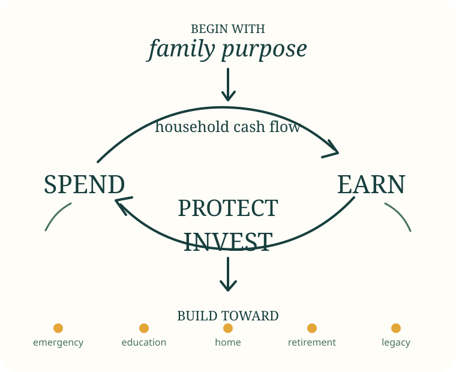

Spend
Cover essentials and commitments, then choose wants consciously. A plan should preserve dignity, not punish the family.
Ask: What gives us real value?
A plain-language family money guide
A good family plan is not a perfect budget. It is a shared system for using today’s money to protect tomorrow’s choices.
No sign-up. No tracking. Your calculator inputs stay on your device.

01 Spend deliberately
02 Earn resiliently
03 Protect the household
04 Invest the difference
The 5-minute start
Answer these privately. This is a reflection tool, not a credit score or financial assessment.
The framework
The order matters. Investing is powerful, but it cannot repair an unstable cash flow or replace protection against a large shock.
Cover essentials and commitments, then choose wants consciously. A plan should preserve dignity, not punish the family.
Ask: What gives us real value?
Protect existing income and strengthen skills, customers or assets that can make earnings more reliable.
Ask: How can income become less fragile?
Build an emergency reserve, understand insurance needs, document obligations and reduce expensive debt.
Ask: What could undo our progress?
Put long-term money into diversified, regulated options that fit the goal, time horizon and ability to take risk.
Ask: When will we need this money?
The 30-minute core lesson
Write what money needs to make possible: safety, education, a home, care for relatives, retirement, faith, community or opportunity. Choose no more than three priority goals for the next year.
List what you own, what you owe, the income you can reasonably expect, essential costs, dependants and existing protection. Net worth is assets minus debts; it is a planning measure, not a measure of personal worth.
Use the printable snapshot ↓For stable income, allocate each pay cycle. For irregular income, plan from a conservative “base income”, separate business and household cash, and divide larger receipts across future months before spending them.
Start with a small cash buffer, then build toward a reserve based on essential costs, income stability, health needs and dependants. The right target is a range, not a universal rule.
Review health, life, property, disability and business risks. Insurance transfers certain large risks; it is not an investment substitute.
Record the balance, interest method, fees, minimum payment, security and due date for every debt. Prioritise arrears and debts that threaten essential assets, then choose either the highest-cost-first method or smallest-balance-first method.
0–2 years
Safety and liquidity matter most.
2–5 years
Balance access, stability and some growth.
5+ years
More time may allow more market risk and diversification.
Do not put near-term school fees or emergency money into an asset that may fall sharply or be hard to sell when needed.
Hold a short monthly meeting: review what changed, pay or schedule commitments, update one goal, agree one decision and assign actions. Keep records and review beneficiaries, nominees and key documents annually.
Private browser tools
These educational illustrations run on your device. Results are rounded and are not forecasts or recommendations.
What remains after essential costs, commitments and chosen spending?
A planning range based on essential costs and income stability.
How much would you need to set aside each month without assuming investment returns?
See how time and regular contributions interact. Returns are never guaranteed.
Estimate equal monthly payments and total interest for a standard amortising loan.
Worked example
This example teaches the method. The figures are invented for illustration and are not national averages.
Sarah earns a stable UGX 2.2m salary. Daniel’s repair business averages UGX 1.4m, but ranges from UGX 700k to UGX 2.1m. They support two children and one parent.
01 School term fees in 5 months
02 Emergency reserve in 18 months
03 Home deposit in 5 years
| Conservative family income | UGX 3,200,000 |
|---|---|
| Essentials and obligations | (2,540,000) |
| Debt payment | (310,000) |
| Unplanned/discretionary | (420,000) |
| Monthly difference | (70,000) |
They plan from Daniel’s lower reliable contribution, not his best month.
| Conservative family income | UGX 3,200,000 |
|---|---|
| Essentials and obligations | (2,420,000) |
| Debt payment | (310,000) |
| Chosen/discretionary | (220,000) |
| Monthly difference | UGX 250,000 |
They cut leakage, renegotiate two bills and preserve a small enjoyment allowance.
School-fee sinking fund
Emergency reserve
Home-goal starter fund
What happens in a better business month? They first refill business working capital and tax provisions, then divide the genuine extra: 50% goals, 30% reserve/debt, 20% family enjoyment. Their ratio is a choice, not a universal rule.
Before investing
When must the money be available? A short deadline reduces the family’s ability to wait through a market fall.
How much could fall without threatening essentials or the goal? Capacity for loss matters more than excitement about returns.
How quickly can the investment be sold, and at what cost? “Valuable” does not always mean “liquid”.
Is too much dependent on one business, property, issuer, currency or person? Diversification reduces concentration, not all risk.
What are all fees, taxes, penalties and commissions? Small recurring charges can materially reduce long-term outcomes.
Who regulates the provider? Who holds the assets? Can claims and licences be verified independently?
From principle to practice
The guide gives you the framework. These short extensions capture the most useful lessons from Kenneth Legesi’s related writing; the original articles provide the full cases and calculations.
Life cover protects dependants from a death-related financial gap. Saving builds accessible reserves. Investing pursues growth. A combined policy may be suitable when its protection, discipline and guarantees justify its cost and long commitment—but test each job separately.
“Emergency money” may need three different responses rather than one account.
Longer-term assets can support recovery, but they should not be mistaken for immediately accessible cash.
A money market fund can serve short-term goals, sinking funds or part of a liquid reserve, but “low risk” is not “no risk”. Before using one:
A home goal needs an affordable property, a credible path to the deposit and financing that fits household cash flow. Rent-to-own can convert part of regular payments into a future purchase pathway, but the family must understand the option period, rent credits, purchase price, forfeiture terms, maintenance duties and the mortgage required at exercise.
Test affordability against a conservative income—not the household’s best month.
Original reading
External articles may contain historical illustrations, rates or product terms. Treat them as dated case studies and verify current conditions independently.
An endowment-with-profits case: protection, discipline, liquidity, surrender terms and alternatives.
LinkedIn · 24 Jan 2025Building the Perfect Rainy-Day FundA layered approach to liquidity, growth and catastrophic-risk protection.
Impala Market · Part 1/7What Is a Money Market Fund?The structure, underlying instruments, variable returns and statements.
Impala Market · Part 2/7What Drives MMF Returns?Market rates, cash drag, fees, risk choices and meaningful comparisons.
Impala Market · Part 3/7MMFs in a Financial PlanEmergency reserves, short-term goals, irregular cash flow and sinking funds.
Impala Market · Part 4/7What Are the Risks in MMFs?Credit, liquidity and interest-rate risk—and what to check before investing.
Impala Market · Part 5/7Open and Manage an MMF AccountLicensing, onboarding, funding, statements, withdrawals and review routines.
LinkedIn · 27 Mar 2025A Rent-to-Own Path to HomeownershipOption periods, rent credits and an income-led route to a future mortgage.
LinkedIn · 3 Jan 2026New Year, New Me?Why repeatable systems, not declarations, create compounding progress.
Print and use
Complete these with pencil, or print the page to PDF. Add account numbers only to records stored securely—not to a sheet shared widely.
Date: ____________ Next review: ____________
Choose no more than three priorities at first.
| Goal | Amount | Date | Already saved | Monthly action |
|---|---|---|---|---|
Confirm whether the rate is flat or reducing balance.
| Lender | Balance | Rate & fees | Payment | Due date | Priority |
|---|---|---|---|---|---|
Thirty minutes, once a month.
Your 30-day plan
Complete the snapshot. Gather balances, due dates, policies and beneficiary details.
Choose one cost to reduce, one bill to renegotiate and one income action to test.
Open or identify the emergency reserve, fix an arrear and review the largest uninsured risk.
Set one automatic transfer or calendar routine and hold the first family money meeting.
Monthly: cash flow and goal check.
Quarterly: debt, income resilience and provider statements.
Annually: goals, insurance, beneficiaries, pension, estate documents and family responsibilities.
Common questions
Not always. First prevent arrears and protect essentials. Expensive debt often deserves priority, while a pension contribution or a small long-term habit may continue. Compare the certain borrowing cost with the uncertain investment return and consider liquidity and employer contributions.
Start with a reachable first milestone, then build a range based on essential costs, income stability, dependants, health needs, insurance and available support. A household with irregular income may need more months than one with two stable earners.
No asset is automatically safe. Land can face title fraud, disputes, concentration, illiquidity, transaction costs and uncertain income. Verify ownership and encumbrances independently, use qualified legal support and consider how the asset fits the family’s wider plan.
Use a conservative base-income estimate, separate business and household money, fund essentials first, create sinking funds for predictable annual costs and allocate unusually good months before spending them.
Age-appropriate participation can teach choices, patience and shared responsibility. Adults should keep sensitive account, debt and conflict details private and never make children responsible for adult financial stress.
Useful language
Trust and transparency
This guide teaches general principles and does not recommend a product or provider. In Uganda, check relevant providers and licences with the official regulator: Bank of Uganda for supervised financial institutions and payment-system consumer protection; Capital Markets Authority Uganda for capital-markets intermediaries; Uganda Retirement Benefits Regulatory Authority for retirement schemes and service providers; and Insurance Regulatory Authority of Uganda for insurers and intermediaries.
Source register and review notes are available in the project repository. Content reviewed 16 October 2026.